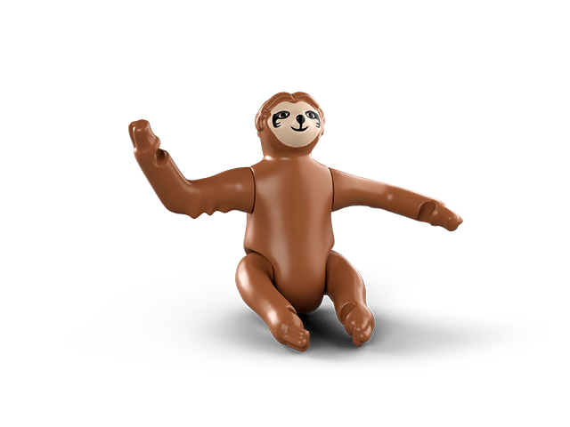
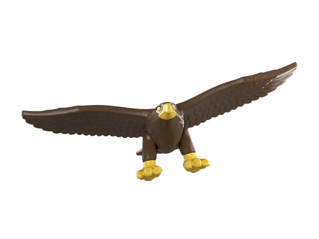
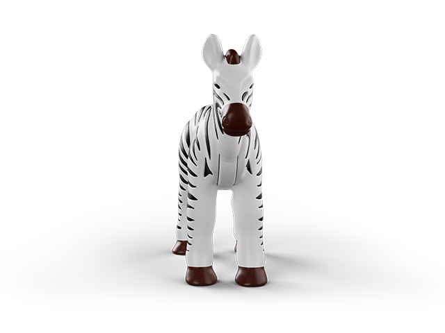

Noua colecție Happy Happy Meal® x Playmobil îi provoacă pe cei mici să-și exploreze curiozitatea.
De la junglă la adâncuri marine, de la broaște țestoase la rinoceri în galop, fiecare aventură îi face să se simtă adevărați experți. Cu o varietate de animale diferite de colecționat și un card cu informații despre fiecare, copiii își pot crea propria rezervație sălbatică și pot descoperi lumea specie cu specie.



Ce surpriză alegi?
Dorești sa construiești o poveste nouă pornind de la o jucărie haioasă sau să afli lucruri uimitoare, într-un mod jucăuș, din noile cărticele Happy Meal® Readers?
Orice ai alege, un lucru e sigur: distracția va fi la cote maxime!
Cum a apărut Happy Meal®?
Faimosul pătrățel roșu cu limba scoasă nu a arătat mereu așa.
Mai întâi a apărut ideea de un meniu special pentru copii, după care a fost inventat ambalajul și partea cea mai intersantă – jucăriile.Descoperă toată povestea meniului Happy Meal®, de la concept la zâmbetele fericite ale celor mai tineri clienți McDonald's®.